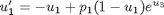
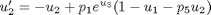
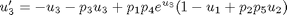
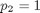
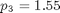
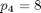
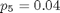
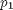
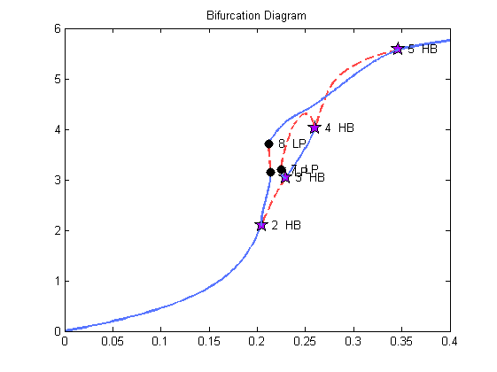

Periodic solutions, A->B->C reaction (Demo:abc)
This demo illustrates the computation of stationary solutions, Hopf bifurcations and periodic solutions in the reaction (Doedel & Heinemann, 1983).



with , , , and . The free parameter is .
The equations are programmed in the equations-file abc.m. The starting point, an equilibrium of the equations is defined in the auto object. A more advanced version, that continues branch points in three parameters is provided by the demo abcb.
Contents
- Calculate the family of stationary solutions.
- Compute a family of periodic solutions from the first Hopf point.
- Compute a family of periodic solutions from the second Hopf point
- Compute a family of periodic solutions from the third Hopf point
- Compute a family of periodic solutions from the fifth Hopf point
- Plot the information
Calculate the family of stationary solutions.
The following constants are set in cabc1.m
- IPS=1: a family of stationary solutions is computed.
- IRS=0: the starting point defined in the object.
- ICP(1): the continuation parameter is PAR(1)
- NUZR=1: there is one user output point, namely at PAR(1)=0.4. Moreover, since the index "-1" in the last line of the constants-file cabc1.m is negative, the calculation will terminate when the calculation reaches the value PAR(1)=0.4..
clear all
Create continuation object
a{1}=auto;
Display the function
type(a{1}.s.FuncFileName);
function [f,o,dfdu,dfdp]=func(par,u,ijac) % % function file for demo abc % f=[]; o=[]; dfdu=[]; dfdp=[]; % enter your equations here x1=u(1); x2=u(2); x3=u(3); d=par(1); alpha=par(2); beta=par(3); b=par(4); s=par(5); e=exp(x3); x1c=1-x1; f(1)=-x1 + d*x1c*e; f(2)=-x2 + d*e*(x1c - s*x2); f(3)=-x3 - beta*x3 + d*b*e*(x1c + alpha*s*x2);
Set initial conditions
[a{1}.s.Par0,a{1}.s.U0,a{1}.s.Out0]=stpnt;
% Load constants
a{1}.c=cabc1(a{1}.c);
Display constants
a{1}.c
ans =
autoconstants handle
Properties:
Ndim: 3
Noutx: 0
Ips: 1
Irs: 0
Ilp: 1
Icp: 1
Ntst: 15
Ncol: 4
Iad: 3
Isp: 1
Isw: 1
Iplt: 0
Nbc: 0
Nint: 0
Nmx: 130
Rl0: 0
Rl1: 0.4000
A0: 0
A1: 25
Npr: 200
Mxbf: 10
Iid: 2
Itmx: 8
Itnw: 5
Nwtn: 3
Jac: 0
Epsl: 1.0000e-007
Epsu: 1.0000e-007
Epss: 1.0000e-004
Ds: 0.0200
Dsmin: 1.0000e-003
Dsmax: 0.1000
Iads: 1
Thl: [11 0]
Thu: []
Uzr: [-1 0.4000]
Run equilbrium solutions
a{1}=runauto(a{1});
--------------- DYNAMICAL SYSTEMS TOOLBOX ---------------------
USER NAME : ECOETZEE
DATE : 26/10/2010 10:09:15
<
BR PT TY LAB PAR(01) L2-NORM U(01) U(02) U(03)
1 1 EP 1 0.00000E+00 0.00000E+00 0.00000E+00 0.00000E+00 0.00000E+00
1 63 HB 2 2.04185E-01 2.10511E+00 5.87753E-01 5.56043E-01 1.94342E+00
1 77 HB 3 2.29836E-01 3.04038E+00 7.99139E-01 6.89422E-01 2.85131E+00
1 93 HB 4 2.59957E-01 4.03230E+00 9.26115E-01 6.16841E-01 3.87573E+00
1 110 HB 5 3.46208E-01 5.57946E+00 9.88177E-01 2.27518E-01 5.48654E+00
1 112 EP 6 4.00000E-01 5.75762E+00 9.91445E-01 1.75932E-01 5.66888E+00
Total Time 0.188E+00
>
Compute a family of periodic solutions from the first Hopf point.
In the constants-file (cabc2.m) for the second run. we note that:
- IPS=2: a family of periodic solutions is computed.
- IRS=2: the starting point is the solution with label 2, (a Hopf bifurcation point), to be read from the solutions-object a{1}.f8.
- NICP=2: there are two continuation parameters (namely PAR(1), and the period, PAR(11)).
- NUZR=1: there is one user output point, now at PAR(1)=0.25, where the calculation is to terminate, since the index ("-1") is negative.
a{2}=a{1};
a{2}.c=cabc2(a{2}.c);
a{2}=runauto(a{2});
--------------- DYNAMICAL SYSTEMS TOOLBOX ---------------------
USER NAME : ECOETZEE
DATE : 26/10/2010 10:09:15
<
BR PT TY LAB PAR(01) L2-NORM MAX U(01) MAX U(02) MAX U(03) PERIOD
2 53 LP 7 2.13697E-01 3.15112E+00 9.55181E-01 7.82545E-01 4.60386E+00 7.61104E+00
2 72 LP 8 2.11903E-01 3.71726E+00 9.94574E-01 7.87019E-01 6.76231E+00 8.28914E+00
2 116 EP 9 2.50003E-01 4.38078E+00 9.97613E-01 7.31620E-01 7.42179E+00 6.53496E+00
Total Time 0.130E+02
>
Compute a family of periodic solutions from the second Hopf point
a{3}=a{1};
a{3}.c=cabc3(a{3}.c);
a{3}=runauto(a{3});
--------------- DYNAMICAL SYSTEMS TOOLBOX ---------------------
USER NAME : ECOETZEE
DATE : 26/10/2010 10:09:28
<
BR PT TY LAB PAR(01) L2-NORM MAX U(01) MAX U(02) MAX U(03) PERIOD
3 29 LP 7 2.24962E-01 3.20785E+00 9.32614E-01 7.65288E-01 4.12206E+00 6.52551E+00
3 60 EP 8 2.50001E-01 4.30860E+00 9.88920E-01 7.25072E-01 5.87858E+00 7.92732E+00
Total Time 0.662E+01
>
Compute a family of periodic solutions from the third Hopf point
a{4}=a{1};
a{4}.c=cabc4(a{4}.c);
a{4}=runauto(a{4});
--------------- DYNAMICAL SYSTEMS TOOLBOX ---------------------
USER NAME : ECOETZEE
DATE : 26/10/2010 10:09:35
<
BR PT TY LAB PAR(01) L2-NORM MAX U(01) MAX U(02) MAX U(03) PERIOD
4 38 EP 7 2.50000E-01 4.30859E+00 9.88928E-01 7.25076E-01 5.87844E+00 7.92715E+00
Total Time 0.417E+01
>
Compute a family of periodic solutions from the fifth Hopf point
a{5}=a{1};
a{5}.c=cabc5(a{5}.c);
a{5}=runauto(a{5});
--------------- DYNAMICAL SYSTEMS TOOLBOX ---------------------
USER NAME : ECOETZEE
DATE : 26/10/2010 10:09:40
<
BR PT TY LAB PAR(01) L2-NORM MAX U(01) MAX U(02) MAX U(03) PERIOD
5 81 EP 7 2.49999E-01 4.38073E+00 9.97613E-01 7.31616E-01 7.42127E+00 6.53497E+00
Total Time 0.880E+01
>
Plot the information
p=plautobj; ploteq(p,a);